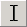
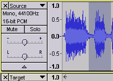
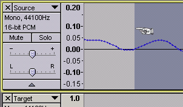
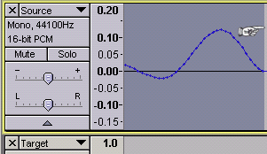
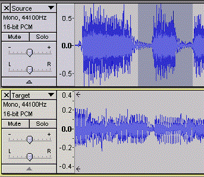
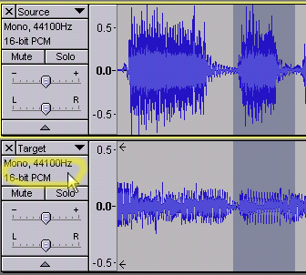
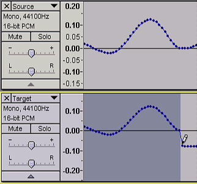

Copy and Paste a section of audio
Select the required audio
Use the Selection Tool  to select a section of audio from the source track (the source and target tracks are labeled Source and Target in the examples.)
- 
To make sure your selection includes exactly the section of audio you want, you can use the zoom tools under the View menu to zoom in to the beginning and end of your selection and select the exact samples you want. To prevent "popping" sounds in your final audio track, try to select a section of audio that starts and ends at the 0.0 line.
- 
You'll want to select a section of audio that ends at the 0.0 line as well.
- 
Now that you have a well-formed selection, you can copy and paste it to the target track.
Zoom out so you can see your entire selection.
- 
Make the copy
Copy the selected audio to the Audacity clipboard by clicking on or press the shortcut Ctrl + C.
Apply the paste
Hold the Ctrl key and click in the Track Control Panel of the target track with the channel, rate and format information. This selects the target track without changing any of its controls and extends the selection into the target track. Then Ctrl-click in the Track Control Panel of the source track to deselect it.
- 
Select from the Edit Menu or press the shortcut Ctrl + V.
- 
Pasting into a new track
If you want to create a new track and paste into that, the paste will automatically create a new mono or stereo track as appropriate, with the audio starting at time zero, if you:
- Paste into an empty project window
- Click in the gray background underneath the last track in the project to deselect all the tracks, then paste.
- You can paste from a mono track into a stero track - the mono audio will be replicated in both stereo channels.
- You cannot paste from a stereo track into a mono track. (You will get an error message if you try to do this.)
If you want the paste to start at other than time zero you must first use Tracks > Add New > Mono Track (or Add New > Stereo Track), place the cursor where you want to paste, then make the paste.